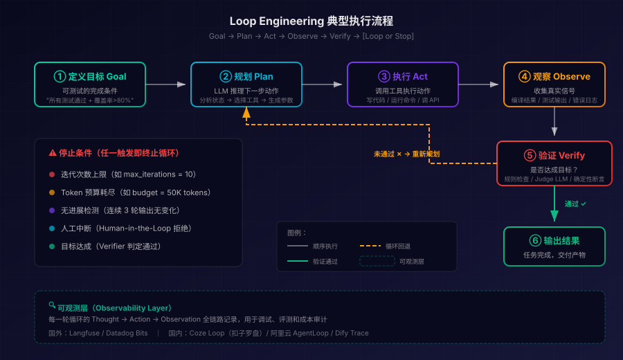

2026 年中最热 AI 概念：Loop Engineering 为何一天 650 万阅读量
2026 年 6 月 8 日，Google Chrome 工程主管 Addy Osmani 在社交平台发了一篇长文，标题只有两个词——Loop Engineering。24 小时内阅读量突破 650 万，评论区涌入数千名开发者。与此同时，Anthropic Claude Code 负责人 Boris Cherny 那句"我不再提示 Claude 了，我让循环来提示它"被引用了上万次。
一个新的 AI 工程概念就此引爆——不是更好的 Prompt，不是更大的 Context Window，而是设计一套能自动提示、验证、重试和停止 AI Agent 的控制系统。
这篇文章将带你理解：Loop Engineering 到底在解决什么问题、它的核心架构长什么样、国内外有哪些平台已经落地、以及你今天就能用起来的实战模式。
从 Prompt Engineering 到 Loop Engineering：AI 工程学的三级跳
过去三年，AI 工程实践经历了三个明确的阶段：
- Prompt Engineering（2023）：优化单条消息的措辞、格式、Few-shot 示例
- Context Engineering（2024-2025）：优化单次 LLM 调用的输入——RAG 检索、记忆管理、上下文窗口编排
- Loop Engineering（2026）：优化 Agent 的迭代控制系统——触发器、验证器、停止条件、状态持久化
这三层并非替代关系，而是递进叠加。一个好的 Loop 内部仍然需要好的 Prompt 和精心设计的 Context。但瓶颈已经转移：当模型能力足够强时，限制产出质量的不再是"你怎么说"，而是"系统怎么跑"。
用 Addy Osmani 的原话概括：你不再是那个提示 Agent 的人，你设计的系统才是。
Loop Engineering 的核心定义
Loop Engineering 是设计 AI Agent 迭代执行系统的工程实践。具体来说，它关注的是：
- Agent 如何感知环境（Perceive）
- 如何推理下一步（Reason）
- 如何执行动作（Act）
- 如何观察结果（Observe）
- 如何判断是继续还是停止（Decide）
这五步组成一个循环，Agent 在这个循环中不断迭代，直到目标完成或触发停止条件。
五个核心原语
一个设计良好的 Loop 需要定义五个原语：
- Goal（目标）：可测试的"完成"定义，不是模糊的"写一段代码"，而是"所有测试通过且覆盖率 > 80%"
- Tools（工具）：Agent 可调用的动作——文件读写、Shell 命令、API 调用、搜索
- Observers（观察者）：真实信号反馈——编译错误、测试结果、Lint 告警、运行时输出
- Verifiers（验证器）：判断当前输出是否达标的机制——可以是规则、另一个 LLM、或确定性检查
- Stop Conditions（停止条件）：迭代上限（iteration cap）、Token 预算（budget cap）、无进展检测（no-progress detection）
缺少任何一个，你就不是在做 Loop Engineering，而是在放任一个 Agent 无限空转烧钱。
典型执行流程图

上图展示了一个完整的 Loop Engineering 执行周期，核心流程为六步闭环：
① 定义目标（Goal） → 人类只做一次：设定一个可验证的完成条件，比如"所有单元测试通过且覆盖率 > 80%"。这是循环的锚点——没有明确目标，Agent 就没有停止依据。
② 规划（Plan） → Agent（LLM）分析当前状态，决定下一步该做什么、用哪个工具、传什么参数。这一步消耗推理 Token，是循环成本的主要来源之一。
③ 执行（Act） → Agent 调用工具执行动作：写文件、运行 Shell 命令、调用 API。这一步产生真实的副作用。
④ 观察（Observe） → 收集执行后的真实信号：编译是否通过、测试输出什么、是否有运行时错误。这些信号是下一轮推理的关键输入。
⑤ 验证（Verify） → 核心决策点。验证器（可以是规则引擎、另一个 Judge LLM、或确定性断言）判断：当前输出是否满足目标？
- 通过 → 进入第⑥步，输出结果，循环结束
- 未通过 → 带着观察到的错误信息，回到第②步重新规划（虚线回路）
⑥ 输出结果 → 任务完成，交付产物。循环正常退出。
停止条件是整个循环的安全阀。即使验证一直不通过，以下任一条件触发也会强制终止：迭代次数上限、Token 预算耗尽、无进展检测（连续多轮输出不变）、人工中断。这是 Loop Engineering 与"无脑重试"的本质区别——它有设计过的退出机制。
可观测层贯穿整个循环。每一轮的 Thought→Action→Observation 全链路被记录，用于事后调试、评测和成本审计。这也是为什么 Coze Loop、阿里云 AgentLoop 这类可观测平台在 Loop Engineering 落地中如此重要。
十大设计模式
基于 Data Science Dojo 和 LangChain 等来源的总结，当前 Loop Engineering 社区已形成十种主流设计模式：
1. Single Agent Loop（单 Agent 循环）
最基本的模式。一个 Agent 接收目标，反复执行"行动→观察→推理"直到完成。Claude Code 的 /loop 命令就是这个模式的典型实现。
2. Multi-Agent Orchestration（多 Agent 编排）
拆分任务给多个专精 Agent，由一个 Orchestrator 协调。例如一个写代码、一个写测试、一个做 Code Review，三者循环协作。
3. Human-in-the-Loop（人类在环）
关键决策节点由人类审批。适合高风险场景——比如数据库迁移、生产部署。循环在人类确认后才继续。
4. Checkpoint & Resume（断点续跑）
长任务中定期保存状态。如果中断（Token 耗尽、网络断开），可以从最近的 checkpoint 恢复，而不是从头来过。
5. Escalation Loop（升级循环）
Agent 检测到自己卡住（连续 N 轮无进展），自动升级到更强的模型或通知人类介入。
6. Parallel Branch Loop（并行分支循环）
将独立子任务分发到并行分支，每个分支独立运行自己的循环。一个分支失败不影响其他分支。实验数据显示，这种模式的任务完成率从线性执行的 0.4/10 提升到 3.3/10。
7. Cron/Schedule Loop（定时触发循环）
按计划定期运行——每天跑一次代码审查、每小时检查一次依赖更新。Claude Code 和 Codex 都已原生支持 cron 调度。
8. Budget-Capped Loop（预算封顶循环）
设置硬性 Token 预算上限。到达预算后无论是否完成都停止，输出当前最佳结果和未完成事项清单。
9. Progressive Verification（渐进式验证）
循环早期用快速粗检（Lint、类型检查），后期切换到深度验证（集成测试、E2E 测试）。节省前期 Token 开销。
10. RAG Sequential Feed（RAG 逐条喂送）
不一次性把所有检索结果灌给 LLM，而是按相关性逐条喂入，每次问 LLM"够了吗"。实测可节省 80% Token 消耗。
国外主流平台：循环工程的第一梯队
Claude Code
Anthropic 的 Claude Code 是 Loop Engineering 概念的实际发源地。Boris Cherny 作为 Claude Code 的创造者和负责人，其日常工作方式就是"设计循环让 Claude 自己跑"。
核心特性：
/loop命令：启动自主循环，支持 autonomous mode/goal命令：定义可验证目标，Judge 模型自动判断完成状态- Cron 调度：定时触发循环
- 四种循环分类：single-turn、multi-turn、scheduled、spawned
- Agent SDK：开发者可编程控制循环的每一步
OpenAI Codex
Codex 的 Automations tab 支持：
- Recurring schedules（定时任务）
- Subagent spawning（子 Agent 派生）
- 循环执行直到 PR 通过 CI
Cursor
通过 Rules 文件 + Agent mode 实现循环设计。虽然没有专门的 /loop 命令，但其 Agent 模式本身就是一个 Plan-Act-Observe 循环。
LangChain / LangGraph
LangChain 官方发布了"The Art of Loop Engineering"博文，LangGraph 作为图状态机框架，天然适合构建复杂的多步循环工作流。
cobusgreyling/loop-engineering（开源 CLI）
GitHub 上最活跃的 Loop Engineering 开源工具包：
loop-audit：审计现有项目的循环质量loop-init：脚手架生成循环配置loop-cost：预估循环 Token 成本- 243+ commits，持续更新
国内平台：平台化 + 可观测的工程落地
Qwen Code（通义灵码）
阿里通义灵码是国内唯一直接对标 Claude Code Loop Engineering 的编程 Agent，2026 年 5-7 月密集发布：
/goal自主编程（5月）：输入目标如"将所有测试从 Jest 迁移到 Vitest"，Agent 自主执行，Judge 模型每轮检查目标状态，满足条件自动停止/loopautonomous mode（7月）：无提示启动自主循环，支持loop.md任务文件，任务列表可随时编辑，循环自动拾取变更- Auto Mode：LLM 分类器评估每个工具调用，自动决定是否免审批执行
与 Claude Code 的差异：Qwen Code 基于通义千问模型，对中文代码注释和文档的理解天然更好，且 /loop 的任务文件机制更强调可编辑性。
Coze Loop（扣子罗盘）
字节跳动推出的开源 Agent 优化平台，已在 GitHub 开源（Apache 2.0）：
- 全生命周期管理：从 Prompt 编写、调试、评测到部署后监控
- Trace 观测：完整记录 Agent 循环中每一步的 Thought-Action-Observation
- 轨迹评测：将异构 Trace 数据归一化为标准的"根节点→Agent 步骤→原子步骤"层级
- PTaaS（Prompt as a Service）：Prompt 版本管理 + 远程拉取
- SDK 支持：Python、Go、Java 三语言，与 OpenTelemetry 兼容
- 集成广泛：支持 LangChain、Google ADK、LiteLLM 等框架的 Trace 上报
定位：不是构建循环本身的工具，而是让你"看见"循环在做什么——这恰恰是 Loop Engineering 落地后最大的痛点。
阿里云 AgentLoop
阿里云旗下企业级 Agent 观测与优化平台：
- 全栈可观测性：Agent 的每个推理步骤、工具调用、决策链路可追溯
- Agent-as-a-Judge：用 Agent 评测 Agent 的输出质量
- Trace2Dataset：从生产 Trace 中自动生成评测数据集，形成数据飞轮
- Coding Agent 接入：通过 LoongSuite Pilot 将开发者机器上的 AI 编程 Agent 数据接入
定位：面向企业级客户，强调治理、合规和成本审计。
Dify
全球 142K⭐ 的开源 LLM 应用平台，循环能力体现在三类节点：
- Loop 节点：执行依赖前轮结果的重复任务，直到满足退出条件或达到最大循环次数
- Iteration 节点：对数组元素逐个执行相同处理步骤
- Agent 节点：LLM 自主决定调用哪些工具、何时调用，动态推理而非预设路径
组合使用这三类节点，Dify 可以构建从简单重试到复杂多 Agent 编排的各种循环模式，且完全可视化拖拽操作。
Coze Studio（扣子开发平台）
字节跳动的无代码 Agent 构建平台（Coze 3.0）：
- 工作流引擎含循环/迭代节点
- 多 Agent 协作：让多个 AI Agent "组团打工"
- 无代码拖拽构建 Agent Loop
- 已开源（与 Coze Loop 同期开源）
国内外差异：概念先行 vs 产品先行
| 维度 | 国外 | 国内 |
|---|---|---|
| 理论贡献 | 概念定义者（Osmani、Cherny） | 实践跟进者 + 本地化 |
| 编程 Agent | Claude Code 最成熟 | Qwen Code 快速追赶 |
| 可观测平台 | Langfuse（专注 LLM Trace） | Coze Loop + 阿里云 AgentLoop（更全面） |
| 开源生态 | LangGraph + CLI 工具 | Dify + Coze Loop + Coze Studio |
| 成本工具 | loop-cost CLI 预估 | 平台内置 Token 用量追踪 + 审计 |
| 落地路径 | "方法论→CLI→集成" | "平台→SDK→开箱即用" |
| 中文支持 | 需要额外适配 | 天然支持中文 Prompt 和文档 |
一句话总结：国外擅长定义"什么是好的循环"，国内擅长提供"哪里能跑循环"。
成本现实：Loop Engineering 不是免费午餐
Loop Engineering 能带来自主化和效率提升，但 Token 消耗是硬约束：
- Agent 循环的 Token 消耗约为标准对话的 4 倍
- 多 Agent 系统可达 15 倍
- 一周重度 Loop Engineering 的 API 成本可能超过多数开发者整月 AI 预算
成本控制策略
- Budget Cap：设置每次循环的 Token 硬上限，到达即停
- Progressive Verification：前期用廉价检查（Lint），后期才用昂贵验证（E2E 测试）
- RAG Sequential Feed：逐条喂检索结果，提前终止可省 80%
- No-Progress Detection：连续 N 轮无改善自动退出
- Model Cascade：简单步骤用小模型，复杂推理才升级到旗舰模型
- Coze Loop / 阿里云 AgentLoop：用可观测平台追踪每个循环的实际开销，找出浪费点
谁需要 Loop Engineering？
适合的场景：
- 长周期编程任务（跨文件重构、框架迁移）
- CI/CD 自动化（Agent 提交 PR → 接收 review → 自动修复 → 重新提交）
- QA 自动化测试（探索性测试、回归测试自动调查）
- RAG 问答优化（多轮检索 + 自验证）
- 内容生产流水线（撰写 → 自检 → 修改循环）
- 数据管道修复（ETL 自动重试 + 自愈）
不适合的场景：
- 一问一答的简单对话
- 单次生成即可满足的创意任务
- Token 预算极其有限的个人项目
- 不需要验证环节的一次性脚本
今天就能上手的三步实践
步骤一：选一个支持循环的工具
- 如果你用 Claude：直接用
/goal+/loop - 如果你在阿里生态：用 Qwen Code 的
/goal - 如果你需要可视化工作流：用 Dify 的 Loop 节点
- 如果你需要观测循环运行状态：接入 Coze Loop SDK
步骤二：定义一个可验证目标
不要说"帮我优化这个函数"，而是说"让这个函数的单元测试全部通过，且执行时间 < 100ms"。目标越具体、越可测试，循环效果越好。
步骤三：设置停止条件
至少包括：
- 迭代次数上限（比如 10 轮）
- Token 预算（比如 50K tokens）
- 无进展退出（连续 3 轮输出不变则停止）
这三条就能防止 Agent 空转烧钱。
小结
Loop Engineering 不是一个凭空冒出的概念，而是 AI Agent 能力提升后的必然产物。当模型足够强大，瓶颈就从"怎么写 Prompt"转移到了"怎么设计让 Agent 自主运转的系统"。
国外由 Addy Osmani 和 Boris Cherny 定义了方法论，Claude Code 和 LangGraph 提供了工程基础设施；国内由阿里（Qwen Code + AgentLoop）和字节（Coze Loop + Coze Studio）快速跟进，在平台化和可观测性上甚至走在前面。Dify 作为全球化开源项目，则为两边的开发者都提供了低门槛的循环构建能力。
对开发者来说，现在正是学习 Loop Engineering 的最佳时机：概念刚成熟、工具链已就位、最佳实践正在形成。设计好你的第一个循环，让 Agent 替你跑起来。
免责声明
本文内容基于公开信息整理，不构成任何投资或技术选型建议。各平台功能以其官方文档为准，Token 成本因使用模式和定价策略差异较大，请以实际用量为准。
参考来源
- Addy Osmani - Loop Engineering (Substack)
- O'Reilly Radar - Loop Engineering
- LangChain Blog - The Art of Loop Engineering
- IBM Think - What Is Loop Engineering?
- Data Science Dojo - 10 Loop Engineering Design Patterns
- Qwen Code - /loop Autonomous Mode
- Qwen Code - /goal Autonomous Coding
- Coze Loop - GitHub
- 阿里云 AgentLoop
- Dify Docs - Loop Node
- cobusgreyling/loop-engineering - GitHub
- Towards Data Science - Loop Engineering Experiment
- Claude Code Blog - Getting Started with Loops
相关阅读
- 从 LLM 到 Agent：ChatGPT 式对话已死？
- 企业 AI Agent 部署实战指南
- Langfuse 可观测性平台深度指南
- Agent 治理与可观测性的隐藏代价
- Dify vs Coze vs RAGFlow vs n8n 深度对比
- 开源大模型选型指南 2026
- Vibe Coding 的隐藏代价与安全风险
- Harness Engineering：AI Agent 看不见的另一半
推荐搭配装备
善其事，利其器。以下硬件能最大化你的AI体验👇
🔗 通过以上链接购买可支持本站持续运营 🙏